Space · Winter 2025 · Team mission concept
PERCI: a penetrator for Umbriel
A smallsat penetrator that rides on NASA's Uranus Orbiter and Probe and hits a moon.

- 159 kgwet mass in the report; 163 kg dry with growth, against a 180 kg dry limit
- 323–328 m/sdelta-V a central hit needs in the re-analysis, against the report's 450 m/s requirement
- 0.75 km/simpact speed on the minimum-delta-V path (report: 0.90 km/s)
- 14students, over a nine-month project
A mission concept from a 14-student team at the University of Michigan, developed with mentors from Michigan and NASA JPL: a penetrator secondary payload for the Uranus Orbiter and Probe flagship that would strike the moon Umbriel and measure what the flagship cannot.
What changed
| 2025 report | Re-analysis | Why | |
|---|---|---|---|
| Delta-V for a central hit | 450 m/s requirement | 323–328 m/s | The minimum-delta-V path needs less than the report's trajectory |
| Impact speed | 0.90 km/s | 0.75 km/s | Follows from that same path |
| Turn before impact | 180° flip at 10°/s | Slow 67° slew | The flip needs 43–66× the wheels' momentum |
| Heater after impact | 140 W for 30 min | 0 W for 30 min; at most 24 W for 2 h in 90% of cases | 140 W came from modelling the batteries alone |
| Link to the flagship | S-band, 24 dB margin | UHF relay, 3 dB at 6 kbit/s in under 1% of cases | The flagship has no S-band; the link table had a unit slip |
| Data returned | 20 GB | About 16 MB in all, 0.15 MB after impact | Set by the relay and the time in view |
| Aft section | Drag flare | Split forebody and aftbody | The flare raises peak g by 4–10× |
| Penetration depth | 3.4–8.3 m | 2–600 m, by surface type | The report covered stiff ice only; no ice test exists above 341 m/s |
| Storage before use | 13.4 years | 16.0 years | Launch to use, not just the cruise |
| Cost | Designed to the $55M cap | Floor of $46–59M before high-g qualification | SMAD small-satellite cost model |
Conclusion
Reaching Umbriel is easier than we reported. Surviving there and getting data home are harder. PERCI would hit 2.2× faster than any full-scale ice test, on a single-string chain where six of nine links have no test data. The strongest result is the alternative: a 13 kg-class penetrator meets 2.5 of the 3.0 in-situ science rows for about a sixth of the mass, at higher shock. That is the concept I would take into Phase A, as a contributed element, not a standalone cost-capped mission.
01The brief
The 2023–2032 planetary Decadal Survey ranked a Uranus mission as the top priority for the decade. The flagship, the Uranus Orbiter and Probe, is baselined for a 2031 launch and a 13.7-year cruise. It will fly past four of the five major moons, which allows only brief remote observations of their spectra and topography. In-situ measurements of surface chemistry and thermal properties are out of reach for the flagship alone. Our customer at JPL asked for a smallsat concept that best leverages the flagship to provide a greater science return at one of those moons.

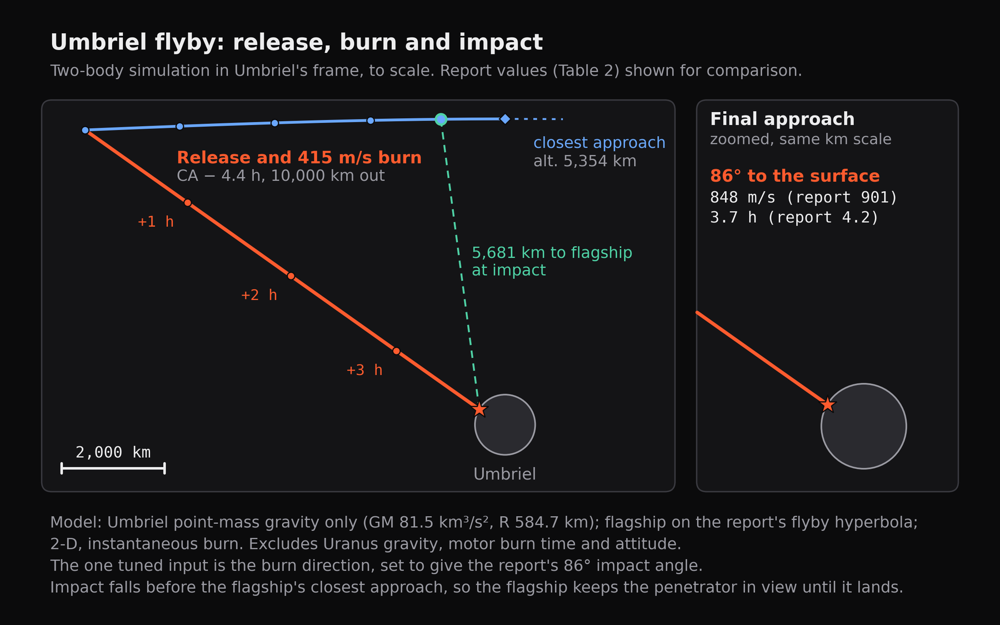
02My part
PERCI had fourteen authors and every one of us touched several subsystems. Mine were the science requirements, the impact analysis, trade studies, the thermal analysis, Ansys work and the CAD design. The next three sections are where those show up: what the penetrator survives when it hits Umbriel, how it stays warm once it is buried, and how the structure was shaped to take the blow. After the course I re-audited the whole report on my own. The last section and the PDF linked below give the details; in short:
- A central hit needs 323 to 328 m/s, not 450, and lands slower: 0.75 km/s, not 0.90.
- The 140 W heater came from modelling the batteries alone; an insulated core needs no heater for 30 minutes.
- The flagship has no S-band, and the link table has a unit slip (0.125 Hz for 0.125 MHz); a UHF relay returns about 16 MB, not 20 GB.
- The 10°/s flip needs 43 to 66 times the wheels' momentum, so a slow slew replaces it.
The sections that follow describe the concept as the team reported it.
03The concept
A penetrator survives an impact and takes measurements from inside the surface, relaying them to the orbiter. It separates from the flagship during a moon flyby. The mission has four phases. In deployment, 4.6 hours before impact, it leaves the flagship at a controlled velocity and the target site is chosen. In approach, 4.4 hours out, it stabilises its attitude, fires a 450 m/s burn and jettisons the motors while turning through 180 degrees (the re-analysis cuts the burn to about 330 m/s and replaces the flip with a slow 67° slew). In descent, one hour out, imagers and an accelerometer switch on and images are compressed and sent. At penetration the thermal probe and seismometer start and data is relayed to the flagship.

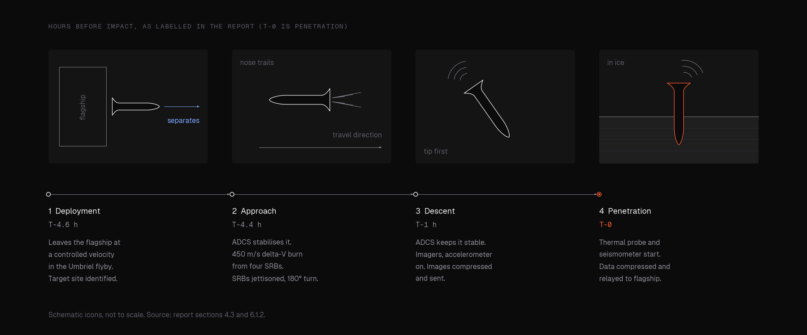
04Choosing a moon
A physics simulation of the flagship's flybys, accounting for gravity from Uranus and the moon, gave an optimal flyby for each moon, chosen to minimise impact velocity with an impact angle close to 90 degrees. Umbriel won with the lowest impact velocity, 901 m/s against 1,170 for Ariel, 1,397 for Oberon and 2,258 for Titania. The report argued it stays in line of sight because the flight is shorter than the time to closest approach. The re-analysis finds the flagship above the horizon in about 75% of impact solutions, so line of sight has to be a targeting constraint, and it finds Titania reachable after all using its slower 2047 flyby. The delta-V needed was about 415 m/s, so the design carries 450 m/s of capability.
05Propulsion
A trade across cold gas, hydrazine, liquid chemical, electric and solid propulsion favoured solid rocket motors: low cost, mass and volume, and easy start-up. The Star 5D, flown on a NASA Mars mission and at technology readiness level 6 or higher, gave the numbers. Each motor is about 10 kg full and 3 kg empty with an Isp of 256 s, and four of them give 476 m/s in the report (483 m/s with its own masses) against the 450 m/s requirement. One, two and three motors give 139, 265 and 379 m/s, so four is the smallest count that clears the line, and 9% mass growth would erase the margin. The motors are mounted nozzles-aft and released in a staggered pair that was meant to flip the craft tip-first. The re-analysis shows the flip needs 43 to 66 times the reaction wheels' momentum, and replaces it with a slow slew.
06Impact and the nose cone
Two models bounded the impact, because the surface of Umbriel is not known. A rigid-rod penetration model (Tate-Alekseevski) for a titanium rod gave a deceleration near 94,000 m/s², about 9,600 g, a force of about 10.4 MN and a depth near 3.4 m. A spherical cavity-expansion model for an ogive nose gave about 5.4 MN and about 8.3 m. The gap is large and the report says why: the ice properties at 70 K had to be taken from polar-ice data, and the two models make different assumptions about the nose and about friction. The nose itself was a trade between a blunt tip, which deflects less on first contact, and an ogive, which penetrates and resists yaw better afterwards. The choice was an ogive with a hemispherical tip, and the structure is a nose cone, a hollow body and a flared aft section that stops the craft sinking so deep that the antenna loses its link. The report's own summary section quotes a slightly different range from these appendix values, and the figures here are the appendix ones.

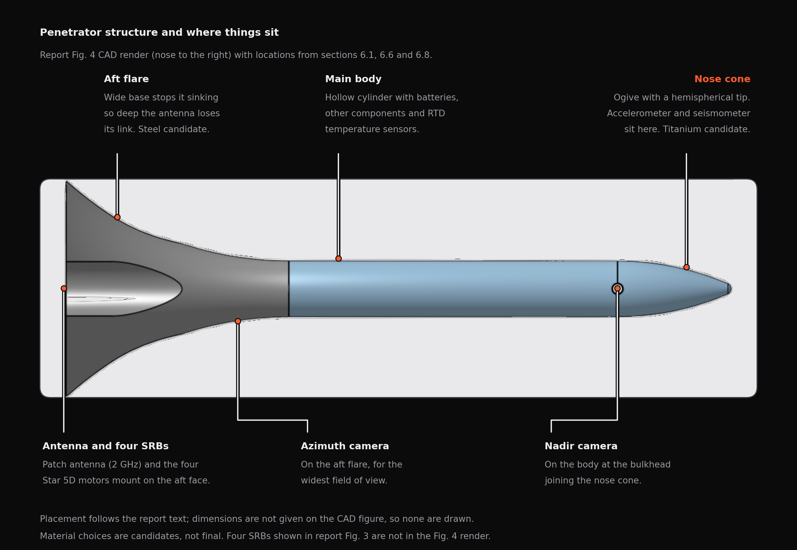

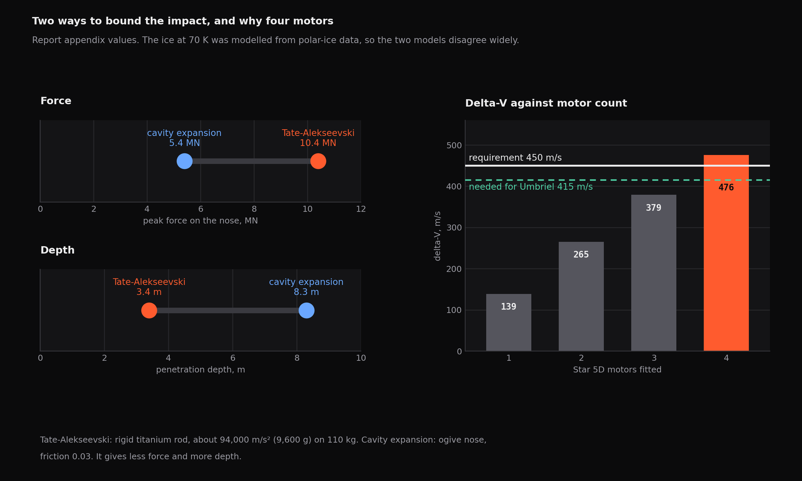

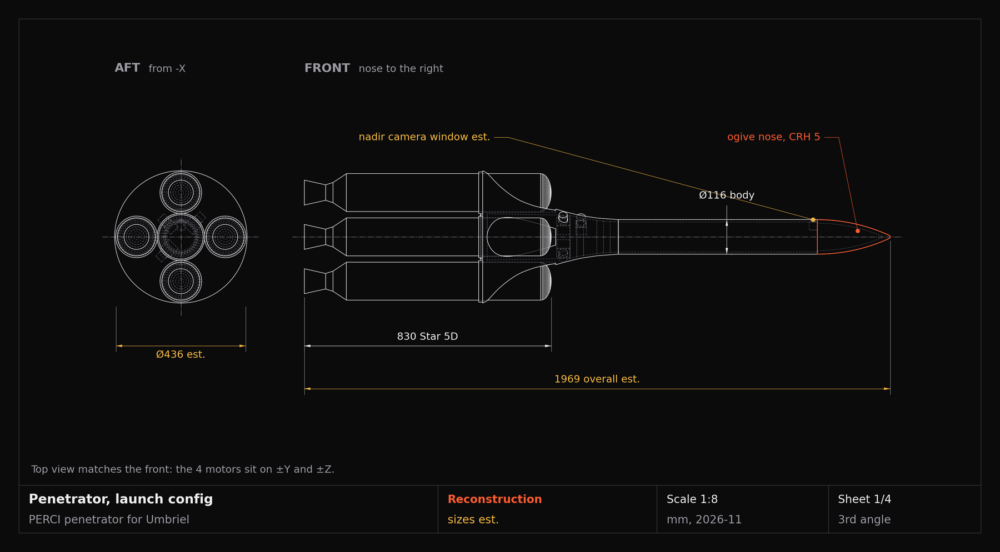

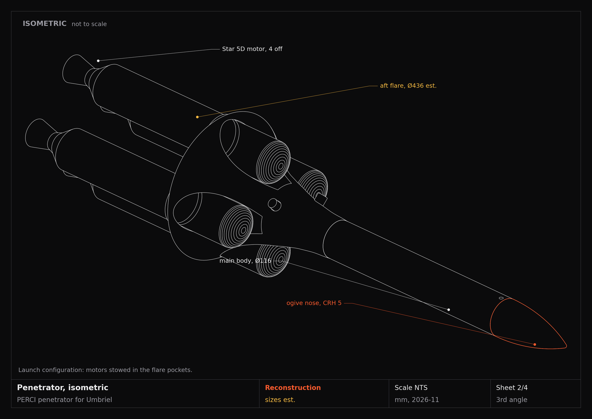

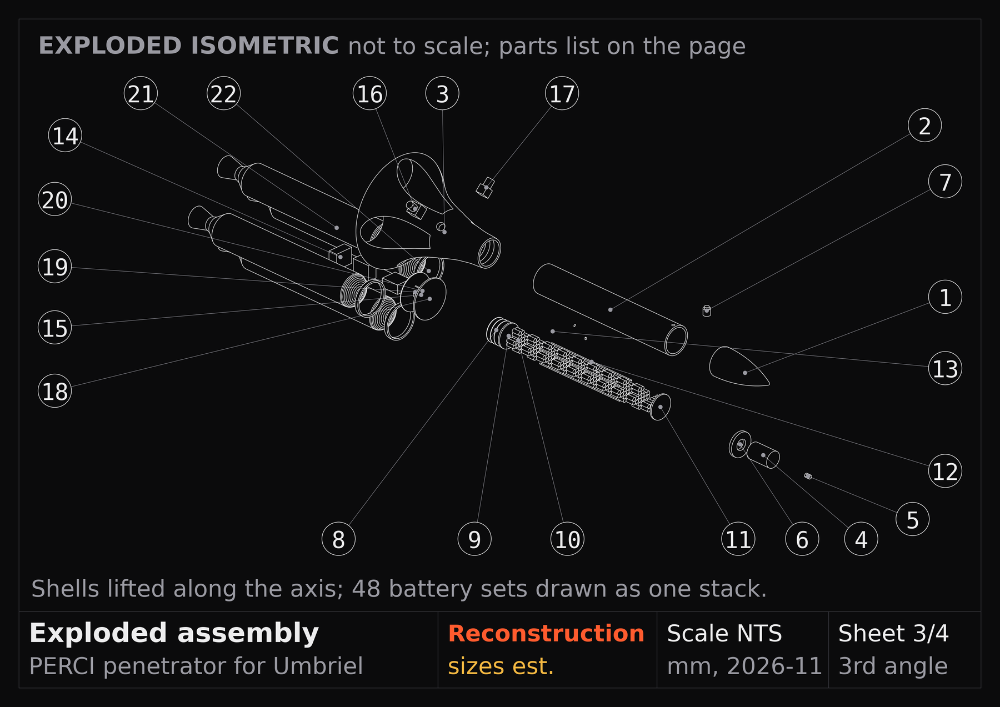
Parts list (22 items)
| No. | Part | Qty | Material | Note |
|---|---|---|---|---|
| 1 | Nose cone (hemispherically tipped ogive, CRH 5) | 1 | Ti-6Al-4V (candidate) | from report; Report B.5.2 / Fig. 9; CRH and a from B.5.3; wall and tip radius est. |
| 2 | Main body (hollow cylinder) | 1 | Steel (candidate) | size est.; Report 6.6; length from Fig. 4 proportions; wall est. |
| 3 | Aft flare with SRB pockets and avionics cavity | 1 | Steel (candidate) | size est.; Profile digitised from report Fig. 4; pockets and cavity est. |
| 4 | Seismometer (Artius, 1.4 kg; shape est.) | 1 | Aluminium housing | size est.; Mass 1.4 kg report B.1.3; envelope est. |
| 5 | Accelerometer (PCB 350B41, 27 g; shape est.) | 1 | Stainless steel | size est.; Mass 27 g report B.1.2; envelope est. |
| 6 | Nose/body bulkhead | 1 | Steel | size est.; Report 6.1.1 (bulkhead joining body and nose); size est. |
| 7 | Nadir camera (behind window at the body/nose bulkhead) | 1 | Camera head | size est.; Report 6.1.1 placement; head size est. |
| 8 | CDH board (ATmegaS128, TMR) | 3 | FR4 + IC | size est.; Report 6.3 (3 microcontrollers in TMR); board size est. |
| 9 | Battery stack aft plate | 1 | Aluminium | size est.; est. |
| 10 | LTC battery set (4 cells; representative layout) | 48 | Li-SOCl2 cells | size est.; 48 sets of 4 cells, report 6.8; cell size and layout est. |
| 11 | Battery stack forward plate | 1 | Aluminium | size est.; est. |
| 12 | Battery stack tie rod | 4 | Steel | size est.; est. |
| 13 | RTD probe (Cernox) between battery layers | 4 | Cernox sensor | size est.; Report 6.1.1 (multiple RTDs in main body); positions est. |
| 14 | Reaction wheel (Rocket Lab 60 mNms, 77x65x38) | 3 | Aluminium housing | from report; Report Table 22 (size, 288 g); orientation est. |
| 15 | 3-axis IMU (size est.) | 1 | PCB | size est.; Report 6.5; size est. |
| 16 | Star tracker (size est.) | 2 | Aluminium + optics | size est.; Report 6.5 (two star trackers); placement and size est. |
| 17 | Azimuthal camera on the aft flare (size est.) | 1 | Camera head | size est.; Report 6.1.1 placement; size est. |
| 18 | Patch antenna substrate (6 mm; est.) | 1 | Ceramic/PTFE laminate | size est.; Report 6.2 and link-budget table (0.15 m antenna); thickness est. |
| 19 | 2 GHz microstrip patch, 0.15 m diameter | 1 | Copper | from report; Report 6.2 and link-budget table (Dt = 0.15 m) |
| 20 | Antenna feed line (orthogonal pair) | 2 | Copper | size est.; Report 6.2 (two orthogonal feeds); position est. |
| 21 | Star 5D solid rocket motor (nozzle aft) | 4 | Titanium case, solid propellant | size est.; Report B.9.2: 10 kg / 3 kg, 9,250 cm3, Isp 256 s; length 830 mm (public listing); diameter est. |
| 22 | SRB mount collar / spring ejector seat (shape est.) | 4 | Steel | size est.; Report B.9.4 (spring-based ejection); shape est. |

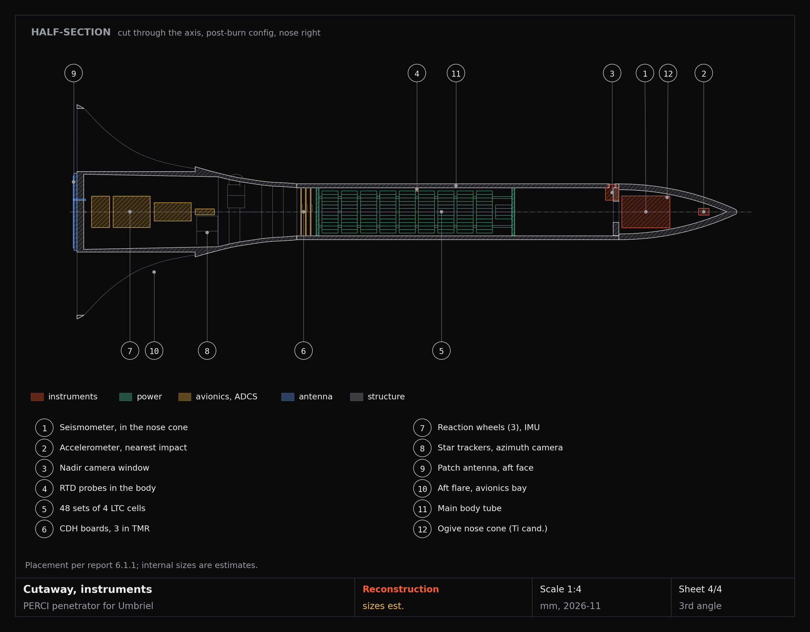

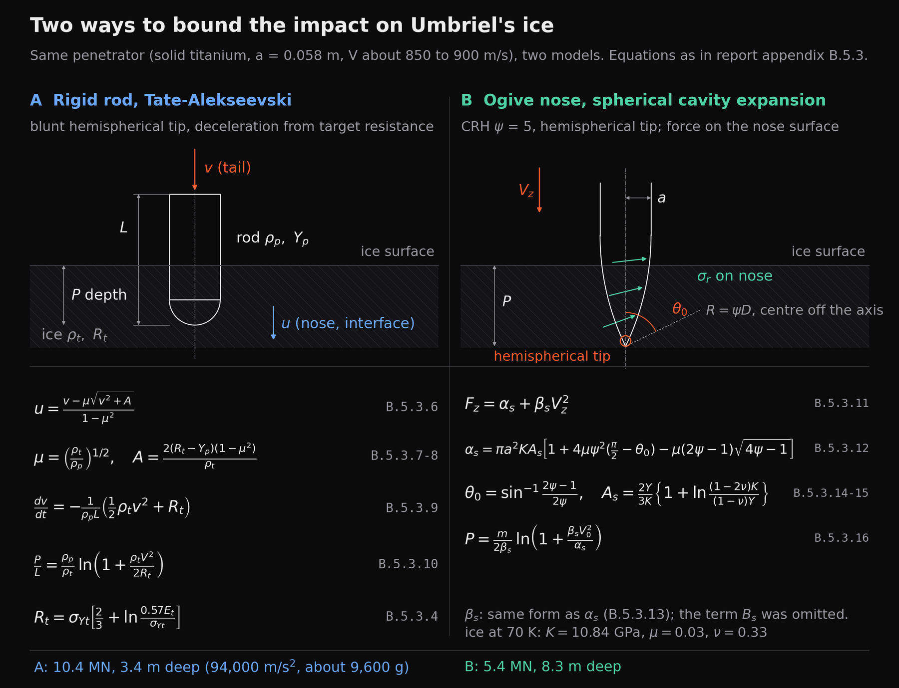
07Staying warm in the ice
The thermal system was flagged as high risk early, so it was analysed first to see whether a solution fitted the budget at all. A one-node model of a worst-case cold craft in Thermal Desktop (a 1.6 m aluminium box, not the penetrator's shape) showed how much the multilayer insulation matters: 54 W of internal heat with bare aluminium tape, falling to 7.9 W with the best insulation and a gold coating. A 70-node model, also box-shaped, then ran four cruise cases around Uranus, with and without the orbiter attached, plus a Jupiter flyby. The batteries stayed inside their limits in all of them, and the average survival heater needed less than 1 W (0.64 W when detached, none when attached at −20 °C). Buried in ice is the hard case. The batteries survive a minute unheated, but holding them for 30 minutes needs 102 W in 70 K ice and 135 W in 30 K ice, which is where the 140 W design value comes from. The re-analysis shows that 140 W follows from modelling the batteries alone; with an insulated core, 30 minutes needs no heater. A last study compared four ways of mounting the penetrator on the orbiter, and a side mount disturbed the orbiter's heat balance least, by at most 1 W, so that is the recommendation. These are feasibility-level models and nothing here has been tested in hardware.

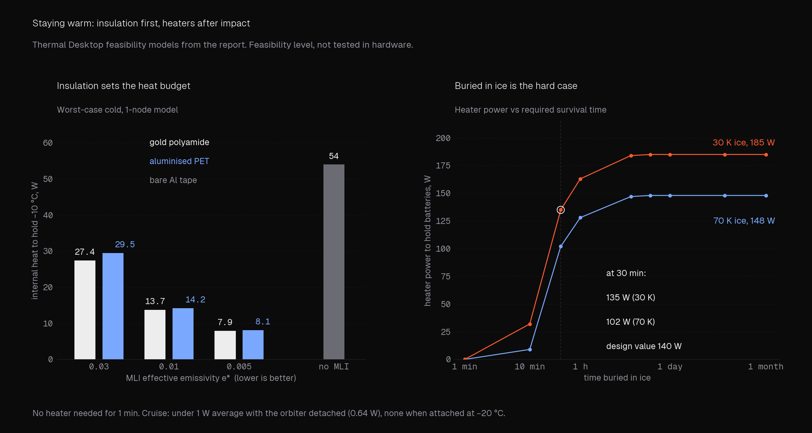
08Payload
A multispectral imager (red, green, blue and two near-infrared bands) looks down during descent and a side-view visible imager looks sideways, using a camera with heritage from NASA's OSIRIS-REx mission. A visible and near-infrared imaging spectrometer reads the composition of the plume from the impact, looking for water, carbon and silicates. A shock-tolerant accelerometer records the deceleration profile, which gives the surface hardness. A broadband seismometer probes the interior and the noise after impact, and a thermal probe measures the temperature below the surface.
09Budgets
Against the programme's limits, the estimate was 159 kg wet against a 180 kg limit that the brief states as dry, a 12% margin in the report (163 kg dry with growth in the re-analysis), with structures (57%) and propulsion (25%) the mass drivers. The volume was 0.072 m³ of 0.42 m³, more than 80% unused. Power in science mode is 37 W on average, with a 140 W heater pulse after impact, covered by a primary-cell battery since the orbiter will not supply power afterwards, while the cruise draw stays under the 2 W the orbiter allows. The report's S-band link margin was 24 dB and its onboard memory 50 GB; the re-analysis withdraws both, since the flagship carries no S-band and only about 16 MB can be returned. The cost limit of $55 million was still being closed and carried the highest risk.

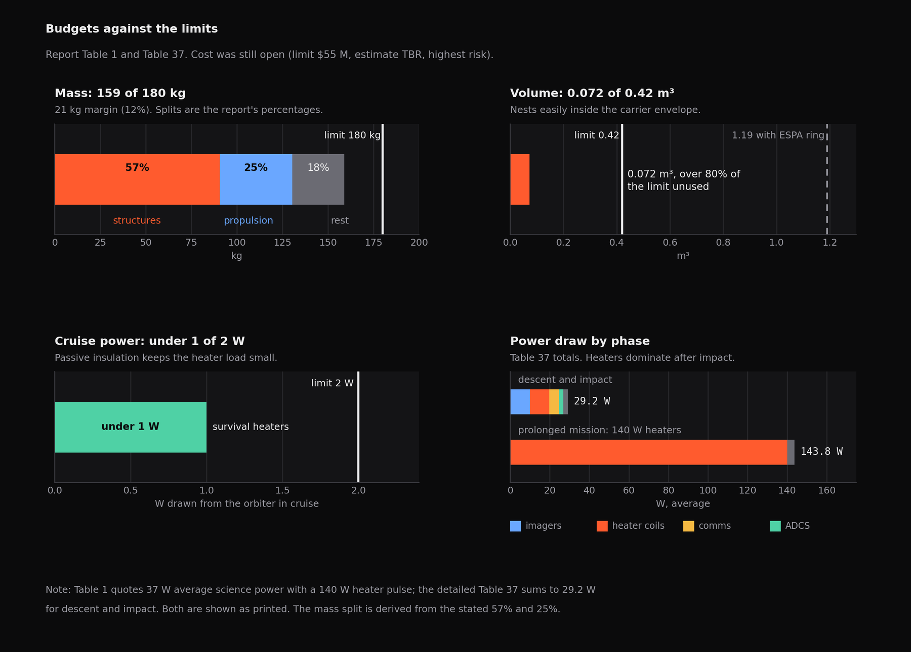
10Systems engineering
The team worked through a full systems-engineering process: customer needs to top-level and functional requirements, a verification matrix, a work-breakdown structure, mass, power and link budgets, a risk analysis, a science traceability matrix tying each requirement to a Decadal Survey question, and an integrated management schedule. All components were required to be commercial or at technology readiness level 6 or higher. Two alternatives, an orbiter and an impactor, were studied and set aside.

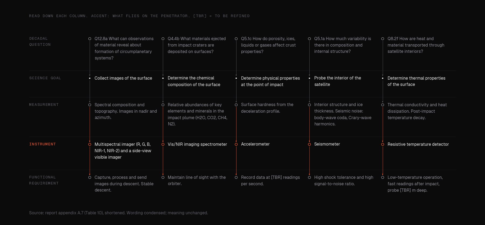

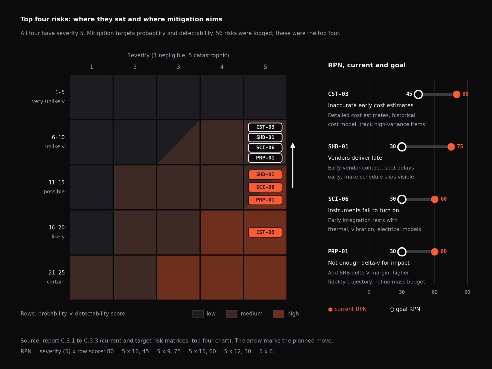
11Version 2: a re-analysis
After the course I went back through the report with fresh models: 61 findings, 4 critical, written up as an analysis that is now 34 pages with 61 passing tests. Some corrections change the picture. The link table's 3.3 bit/s limit is a unit slip (0.125 Hz written for 0.125 MHz; the correct figure is about 842 kbit/s), the effective radiated power is 11.4 dBW, not 5.67, and the 15 dB margin and the 2.14 Mbit/s claims contradict each other. The wheels are 43 to 66 times too small for the 10°/s flip. The 140 W heater is reproduced exactly by a battery-only one-node model, which shows it is sized for holding the batteries warm, not the whole craft. The target's penetration resistance is 0.454 GPa by the report's own formula, not 0.6, and the ice-flow law was misused. The 180 kg limit was applied to a wet mass. Titania is reachable using the 0.47 km/s flyby. And 20 GB of data cannot be returned in the link time; about 16 MB can.
The v2 design changes what the numbers say it should: delta-V requirement 330 m/s instead of 450 (the minimum central hit is 323 to 328 m/s across the four unknown flyby orientations), impact speed 0.75 km/s instead of 0.90, a slow 67° slew in place of the 180° flip, a split forebody and aftbody in place of a drag flare (which raises peak g by 4 to 10×), a heater of 0 W for 30 minutes and at most 24 W for 2 hours at the 90th percentile, a UHF link capped at 6 kbit/s that closes with a 3 dB margin in under 1% of sampled cases unless the flagship's UHF receiver proves better than assumed, and science narrowed to the surface-hardness and thermal questions plus part of the imaging question. With maturity-based growth the wet mass is 191 kg and the dry mass 163 kg, inside the 180 kg limit, which the brief states as dry.
Fourteen new ideas were tested against this baseline: four kept, five partly supported, one unproven and four failed. The Oberth burn at periapsis, a pre-impact retro motor, oblique impact and a two-penetrator seismic network all failed. Releasing the penetrator 12 to 24 hours earlier cuts propulsion mass from 26 kg to 3 to 9 kg, but the probability of an acceptable impact is then 0.47 to 1.00 depending on the flyby orientation. Penetrators released from a flyby have prior art, so only the Umbriel numbers are new. The biggest unknowns remain: penetration at 0.75 km/s has not been tested (the highest ice test is 341 m/s) and depth varies from 2 to 600 m with target class; shock survival of the seismometer and cells; the flagship's UHF receiver sensitivity; and the error budget and flyby orientations, which are my own bounding assumptions.

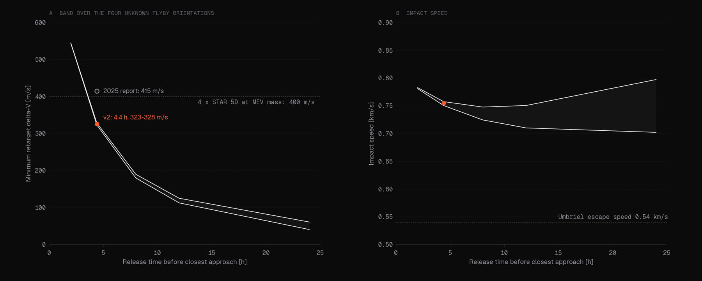
12Against every penetrator that has flown
The re-analysis left one question open: how far outside experience is PERCI? I put it on the same axes as every penetrator, impactor and lander I could find a source for: DS-2, Mars 96, Lunar-A, MoonLITE, the ESA ice penetrator, Hayabusa2's SCI, DART, Philae and MASCOT. Every survivable penetrator built or tested weighs 3.6 to 45 kg and hit at 80 to 341 m/s. PERCI v2 hits at 750 m/s with 119 to 149 kg: 2.2 times the fastest full-scale ice test, 2.6 times the heaviest penetrator ever built, and 29 times that test's kinetic energy. No penetrator has yet returned data from another body. DS-2 was lost, Mars 96 was lost at launch, Lunar-A was cancelled and MoonLITE stopped at Phase A.
That pushed me to ask whether PERCI is the right size at all. I scored four ways of putting instruments on Umbriel against the science traceability matrix. The flagship alone meets none of the in-situ rows. PERCI v2 meets 3.0 for 420 to 500 kg of launch-mass equivalent, and a MASCOT-class lander meets 2.0 but needs 1.19 km/s of braking. A 13 kg-class penetrator meets 2.5 rows for 55 to 81 kg, about a sixth of PERCI's mass. Run through the same penetration model, the small body stops 3 to 4 times shallower, at about 3.5 times the shock. Its hard-ice median of about 24,000 g matches the ESA sled test, but 27% of hard-ice cases exceed the 35,000 g gas-gun level. It trades burial risk for shock risk, and it is the alternative I would carry into Phase A.

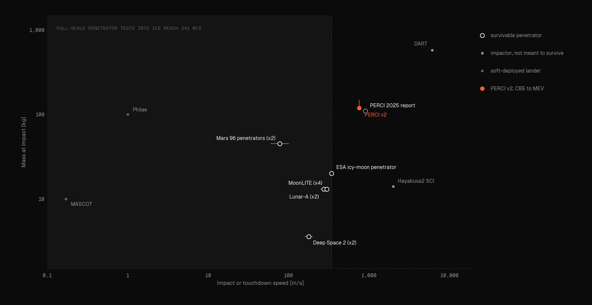

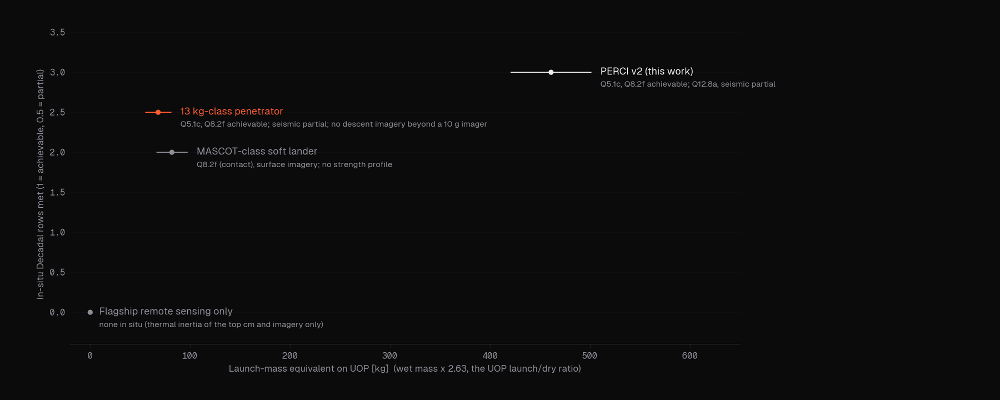

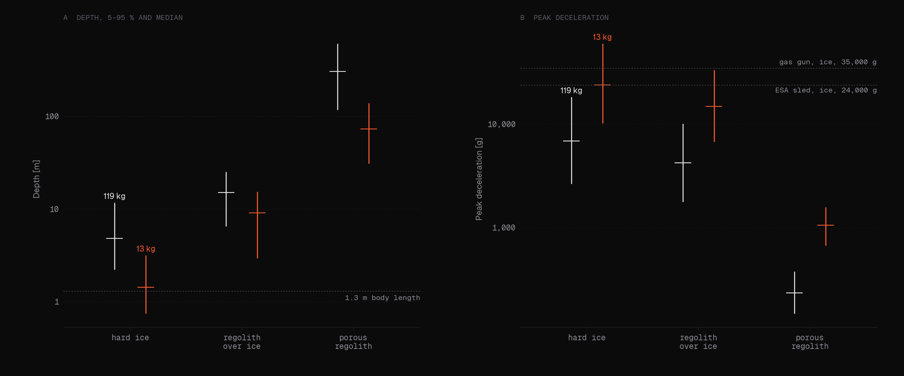
13Release, data and relay
The report treated the release as one line in the concept of operations. I compared it with how real carriers have let go of secondaries: Huygens, Galileo's probe, Philae, LICIACube, SCI, MINERVA and the Artemis I CubeSats. A Huygens-type spin/eject device (0.35 m/s, 7.5 rpm) gives the spin for free and replaces 1.75 kg of PERCI's spin-up and despin hardware. For a 1 km stand-off at motor ignition the separation has to come about 48 minutes before the burn, so about 5.2 hours before impact. The spring is not an aim driver either: applying Philae's 7% knowledge error to each spring, the probability of an acceptable impact stays at 0.94 for any separation error up to 15 cm/s.
The launch, the 13.5-year cruise and the Umbriel flyby put the penetrator in storage for 16.0 years before it is used, not the 13.4 years the report used for its cold-soak risk. The 2026 UOP update moves launch to 2035 to 2040, so the dates are placeholders, but the storage time does not shrink.
After impact the median return is 0.15 MB in one 30-minute pass (0.04 to 0.55 MB). Only the accelerometer record, the temperature decay and housekeeping fit; the descent images go out before impact. On the flagship the whole 15.8 MB is 1.8 hours of Ka-band downlink, about 1% of one orbit's capacity, so store-and-forward is not the constraint. I also looked at relaying again on the second Umbriel flyby, 103 days later, and rejected it: at v2 insulation the penetrator leaks 13 to 41 W of heat it cannot replace for that long. The real cost to the flagship is pointing its UHF antenna at PERCI during its own closest-approach science window.

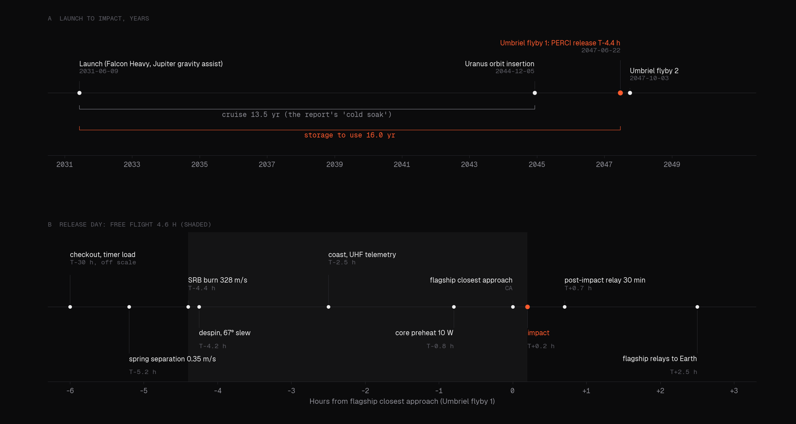

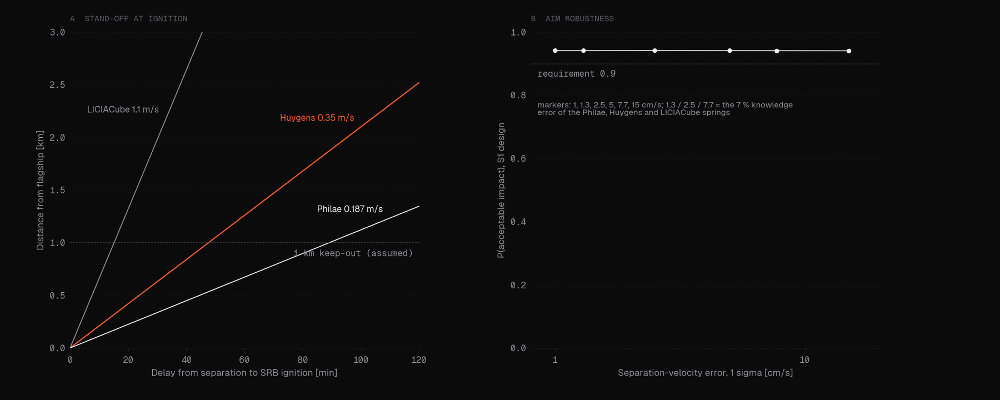

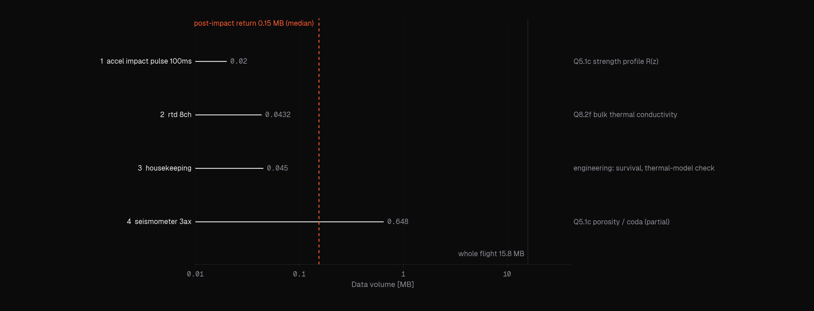
14What could still sink it
From separation to relay PERCI is single-string: nine links, and six of them have no test or flight datum at PERCI's conditions. The reference classes are not encouraging. Penetrators are 0 for 2, which gives a mean success of 0.17 with a Jeffreys prior. Deep-space secondaries released from a carrier are 8 for 12, a mean of 0.65.
The cold soak adds a requirement on the flagship. Keeping the solid motors at a storage floor of −6.7 °C in deep space needs 1.4 to 13 W, depending on the insulation, against the 2 W cruise allowance. Only very good multilayer insulation fits, and the v2 budget's 0.64 W has no motor heater in it, so I no longer claim it is enough.
Cost is the other one. The SMAD small-satellite cost model gives a floor of $46 to 59 million (2024 dollars) on PERCI's dry mass before any high-g qualification, which already reaches the $55 million SIMPLEx cap the report designed to. DS-2 cost $29.2 million in 1999 for two 3.6 kg probes. The realistic route is a contributed element, the way Huygens, MASCOT and LICIACube flew.
Planetary protection was missing from the report entirely. COSPAR's 2026 policy defaults landers on icy worlds to Category IV. The impact releases 33.5 to 42 MJ, enough to melt up to 55 to 69 kg of ice, and the warm core starts above the −28 °C threshold in 62% of sampled cases. Umbriel needs either a transport analysis or Category IV bioburden control. Umbriel is not on the list in the version of the policy I read, though Titania is.

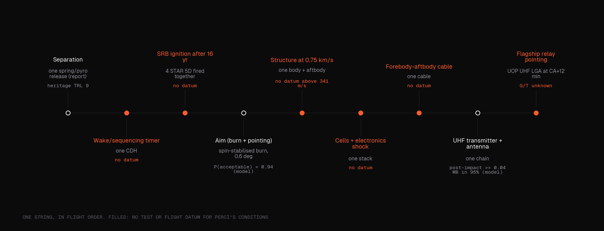

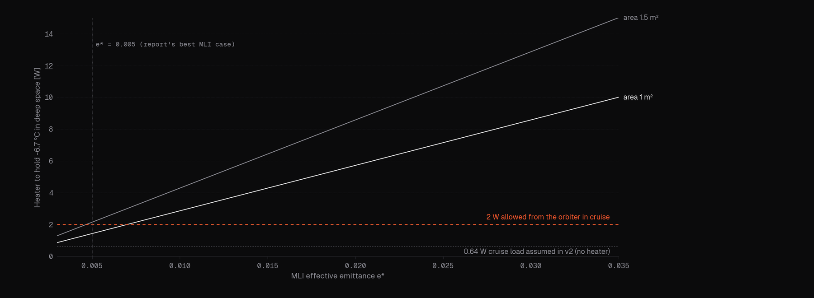

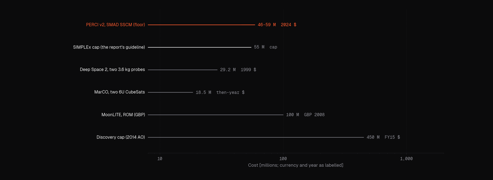